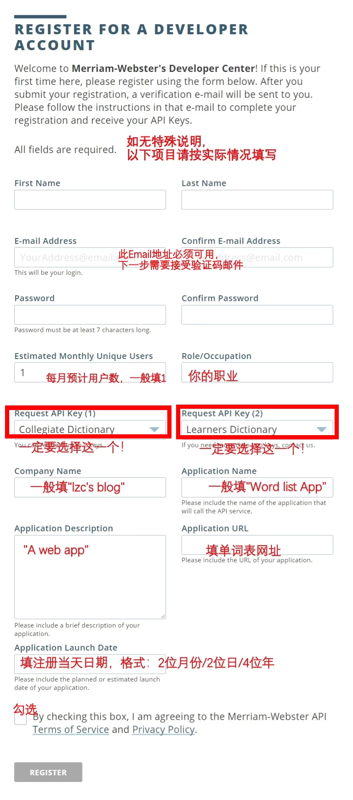
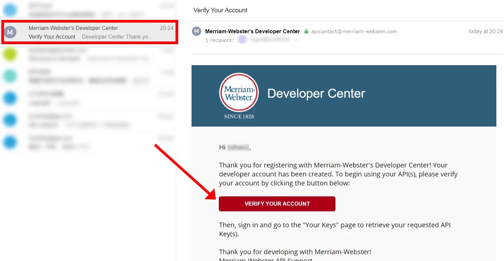
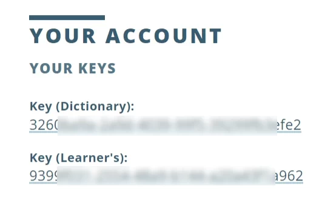

韦氏词典KEY申请
应用
韦氏词典KEY应用在英英词典和朗读单词时包含例句2个功能中。
Step1/3
打开韦氏词典开发者中心官网->注册，填写表单。以下为填写时的注意事项：

Step 2/3
打开你的邮箱收件箱（未读邮件），找到韦氏词典发来的验证邮件，点击其中的链接，完成注册。

Step 3/3
登录韦氏词典开发者中心，点击YOUR KEYS，把2个KEY分别复制到博客对应空格内。

百度翻译开放平台KEY申请
应用
朗读单词时，如果勾选“朗读例句”，那么在每个例句后面会有“显示中文”的按钮。如要正常显示中文，你需要申请百度翻译开放平台的通用翻译API KEY。
Steps
打开百度翻译开放平台，登录你的百度账号（与其他百度系产品互通，如无账号需先注册）